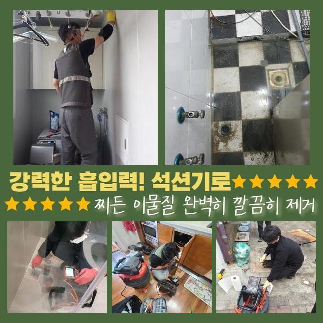
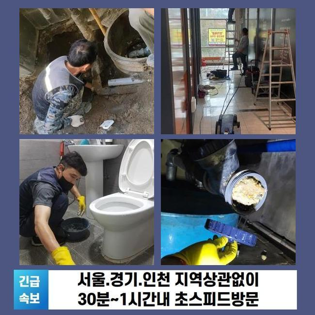
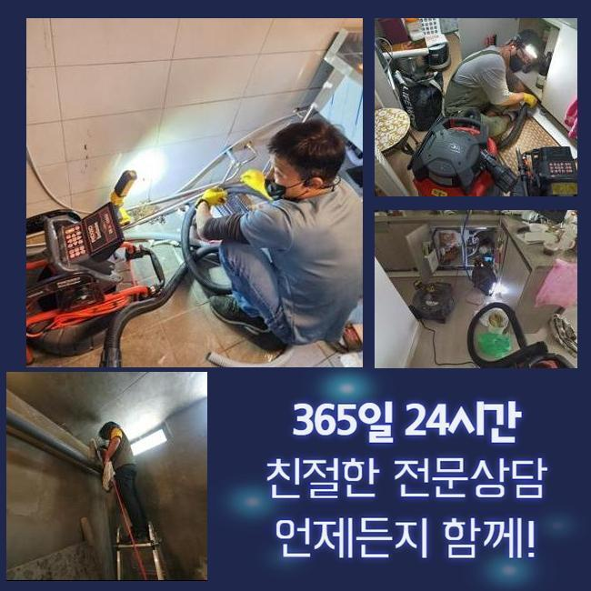
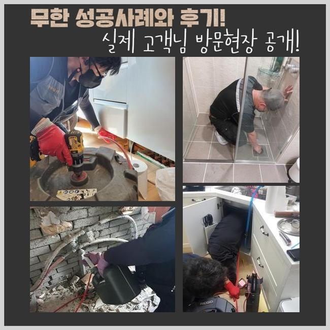
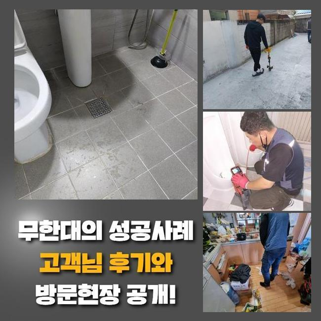
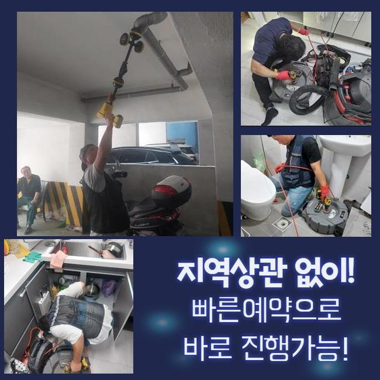
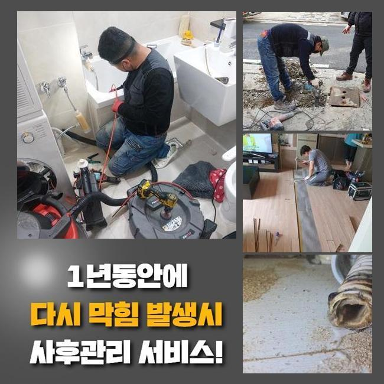

🏠 종로 누상동씽크대역류 관수동 냄새차단 누수탐지공사
용인 싱크대막힘 전문 시공 후기

📋 작업 개요
- 위치: 용인
- 서비스 유형: 싱크대막힘, 배관막힘, 누수수리, 역류해결, 뚫는업체, 배관청소, 고압세척, 설비공사, 악취차단
- 작업 일시: 2025. 3. 27. 4:19
- 업체명: 하수구수사대 (010-5615-2118)
🔍 문제 상황
종로 누상동씽크대역류 관수동 냄새차단 누수탐지공사
어제는 나홀로아파트 단지내부에서 우수배수관이 막혀버리는 바람에 물이 역류해버린다는 문의를 받았죠
고인물이 우수설비로 빠져나가지 못하고 반대로 넘쳐났기에 근방이 오염되고 벌레들도 꼬인다고 하셨죠
3달 전쯤에도 흡사한 증상이 나타났었는데 최근 일주일간 강우량이 많았기에 더더욱 심각해졌다고 설명해 주셨어요
그것으로 근방에 오취가 증가했고 주민분들의 불편함도 증가하게 되었던거죠
정비를 곧바로 진행해달라 요청하셨기에 관련한 시공준비에 착수하였죠
현장의 주소지를 파악해보니 10분도 안되는 곳에 위치한 아파트였죠
고객께 즉시 고쳐드리겠다고 말씀드리고 차량에 장비를 싣고 출발하였답니다
단지 안으로 들어가니 아파트 관리사무소 바로옆에 우수관로가 있었네요
겉에서 확인해 보았더니 나뭇가지와 비닐 등이 많았고 앞쪽으로 가보니 이를 치우기위한 빗자루 등이 세팅돼 있었답니다
역류문제가 심화되면서 경비직원분들께서 수시로 그것을 정리하셨다고 하네요
하지만 형편은 나아지지 않았기에 즉각적인 수선을 요청하신 것이었죠

🔎 원인 분석
💡 전문가 진단: 정밀 진단 장비를 사용하여 슬러지의 고착 여부를 판명하고 타격/세척 작업을 실시했습니다.
우수관로는 본래 낮은곳으로 빗물이 모이게 시설되어야 마땅하지만 이곳은 주위와 비슷한 높이로 건설이 마감되어 역류증세가 늘어나게 된거였죠
이것들을 처리하려면 대형공사를 해야했으나 고객님에게서는 그 부분은 한달정도 뒤에 계획해보자고 하시면서 우선 뚫음부터 해달라고 요청이야기하셨어요
우수배관의 막힘현상을 본격적으로 점검해보았더니 나뭇잎들도 있었으나 물티슈와 같은 찌꺼기들도 굉장히 많았답니다
그로인해 파이프가 차단되었던 것이고 역류증세까지 발현되게끔 사태가 발전된거죠
손님분께 혹시나 가정안에서 우수관쪽으로 오물을 흘려보낼수가 있나 물어보았는데요
저층세대원들이 베란다쪽에서 이용한다고 말하셨어요
이때문에 여러차례 주의말씀을 드렸지만 잘 지켜지지않는 상황이었죠
그부분이 고쳐지지 않는다면 거듭해서 역류가 발발할수 있단걸 고지해드렸고 관련한 대책을 취하기로 하셨어요
우수시설을 열어봤더니 우수가 잘 빠져나가지 못하는게 바로 파악되었죠
배수시설 주위에 잔존물이 가득찬 상태여서 작업에 돌입하기 힘겨웠죠
그것에 더하여 파이프 속에 잔존하는 잔류물도 상당하였고 크기도 커서 간소한 장비로 처치하기엔 여의치 않았죠
이때문에 저희팀은 전동스프링을 활용해서 빠르게 정비하는 대책을 시작했어요
우수관주변이 넓지 않았고 보슬비가 내리고 있어서 작업을 시행하기 곤란하긴 했어요

🔧 작업 과정
이러한 나쁜 컨디션에도 의뢰인분의 괴로움을 최소화시키기 위하여 곧바로 시공을 속행했어요
배관카메라는 관로안을 체크하고 이물수준을 간파하는데 필수적인 기기입니다
내시경설비를 넣어서 슬러지의 양과 성질을 명확하게 규명할수가 있으며 그것을 바탕으로 수리시간을 절용할수가 있었답니다
그와 함께 배수관스프팅 장비를 통하여 관로를 청소하는 과정이 시행되었고요
우수관이 작다면 배수구망이 없기에 찌꺼기들이 손쉽게 흘러드는 형국이 왕왕 발발하죠
그런 경우에 잔재들이 적체되고 종국엔 관이 차단되어 역류현상이 일어나거나 냄새가 올라올 가망이 높아지죠
그것들을 미연에 막으려면 자주 내부청소를 시행해야 하며 나뭇잎 등이 침투못하게 거름장치를 설비하는 부분도 필요해요
그러한 내용들을 의뢰자님께 설명드렸고 특별히 사용량이 많은 곳일수록 한층 관리해나가야 한다는 것도 강조해 드렸죠
청소를 진행하는 과정에서도 배수관 내측에 금이 가지는 않았는지 누수증상의 가능성은 없는지를 꼼꼼하게 관찰하였어요
이러한 과정으로 예상하지 못했던 사고상황을 차단하고 거주자들의 편안을 가져올수 있죠
큰 찌꺼기들을 제거하고나서도 관로에는 아직 잔존물이 체류중이었어요
그부분을 해결하려 샤프트분쇄기를 접목해보기로 하였죠
해당 장비는 강력하게 도는 쇠사슬로 배관면에 부착된 찌꺼기들을 분쇄하는 용도로 얇은 노즐이 있어 꼼꼼하게 노폐물을 없애나갈수 있어요
거기에 더해 배관면을 긁어내지 않아 안심하고 쓸수 있는 특성이 있답니다
작업중에 빗방울이 잦아들었고 바닥부근에 있던 물기를 정리하기 위해서 석션기기를 통해 시공을 종료하였죠
샤프트기기로 분쇄한 성분을 여러차례 석션장비로 소제하면서 완전무결하게 트러블을 해소하게 되었네요
의뢰인의 고통을 최소화시키기 위하여 끝까지 최선의 노력으로 일하였으며 파이프는 원래대로 빗물이 빠지는 상태로 수리되었어요
이러한 시공을 바탕으로 말끔한 우수파이프를 유지해나가는 일이 어느정도로 중요한것인지 재차 강조해 드리게 되었죠
배관이 막혀버리면 약소하게 불편리가 생기는걸 넘어 더욱더 심각한 상황으로 진행될수 있어 자주 세척하고 보존해나가야 한단걸 늘 강조드리고 있죠
특별히 이지점은 물빠지는 위치의 시설물이 높게 위치하였기에 한층더 자주 손봐야한다는 내용도 알려드리게 되었죠


✅ 작업 완료
고객께서는 배관 내시경 이것을 활용해 전제척인 우수관 모습을 즉각적으로 파악할수 있으셨으며 마지막에는 빗물을 흘려보내 잘 뚫렸는지 시험했죠
위와 같은 수순으로 단지내의 우수관로의 고장을 처리했고 역류증상까지 완전하게 해결됐죠
평소관리가 힘겨운 공용배관이나 가지배관 고장도 배관전문가를 찾아 빈틈없이 검사하고 세척받아 보시길 바라요
여러분들의 배수설비에 이상이 일어나지 않기를 바라요
혹시 막힘이 감지된다면 방치하지말고 조속히 연락주십시오 신속하게 이동하겠습니다




⚠️ 베란다 누수 및 방수 관리 방법
- ✅ 비가 많이 올 때 창틀 주변이나 아래층 천장에 얼룩이 생기는지 정기적으로 확인해 보세요.
- ✅ 우수관 주변 실리콘 마감이 들뜨거나 깨진 틈새가 있는지 손상 여부를 수시로 체크하세요.
- ✅ 베란다 바닥 타일의 줄눈(메지)이 소실되면 그 틈으로 물이 침투하여 누수가 유발됩니다.
- ✅ 누수 의심 증상 발견 시 방치하면 아래층 손실이 커지므로 즉시 전문가의 진단을 받으십시오.
💡 핵심 정리
- 확실한 장비 작업(내시경 점검 및 샤프트 스케일링)으로 원인을 뿌리 뽑습니다.
- 작업 후 1년 이내에 동일한 부위 재발 시 100% 무상 A/S 서비스를 보장합니다.
- 서울 · 경기 · 인천 전 지역에 24시간 언제든 긴급 출동할 수 있도록 항시 대기 중입니다.
❓ 자주 묻는 질문 (FAQ)
🚨 용인 싱크대막힘 문제로 고민이신가요?
정확한 원인 진단과 확실한 시공으로 재발 없는 해결을 약속드립니다.
24시간 긴급 출동 | 서울 · 경기 · 인천 전지역 | 1년 내 재발 시 무상 A/S